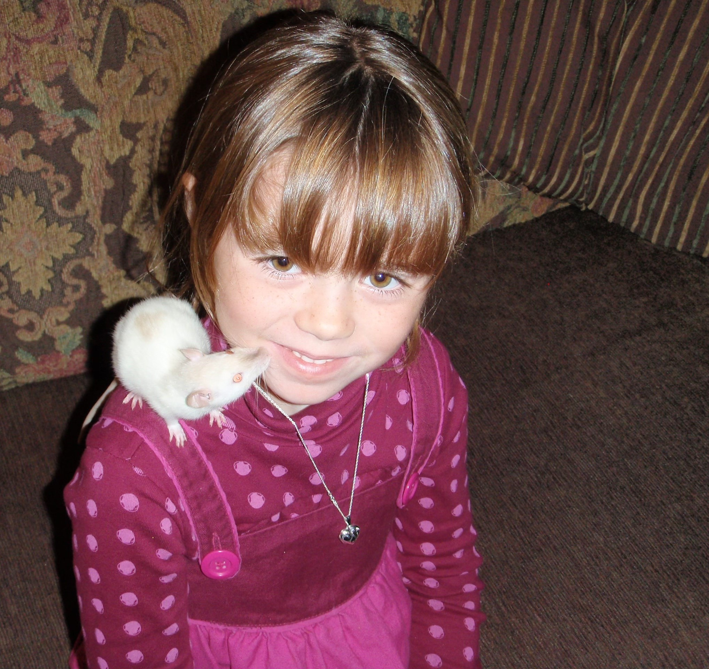

Daisy.
2009-2011

I got Daisy when I was six, as a gift from my family. She was albino, and had bright red eyes, which I thought was really cool. It's always saddened me that people are scared of rats, because she was the most intelligent, cuddly, entertaining little guy. She unfortunately passed away of a tumour after a little more than a year, but that year I had her made me love her more than anything.
